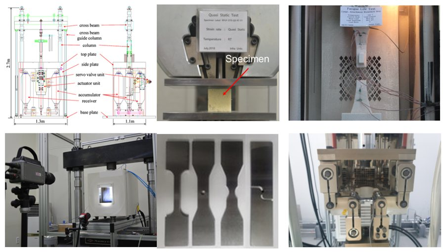
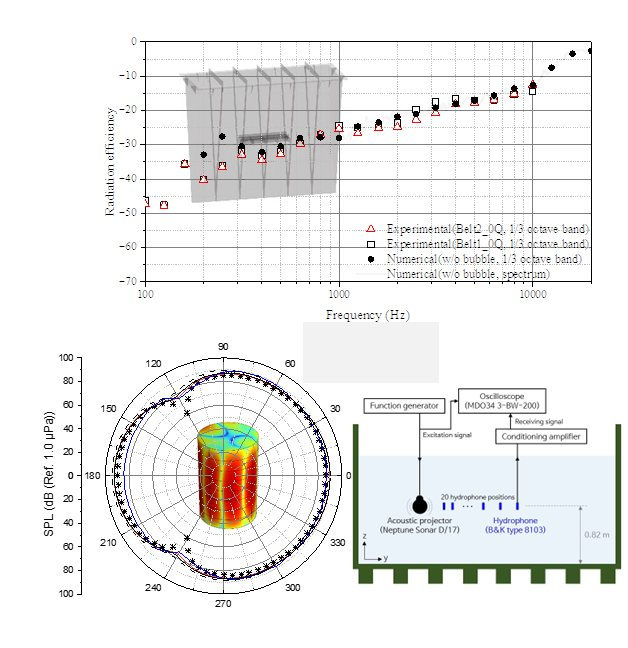
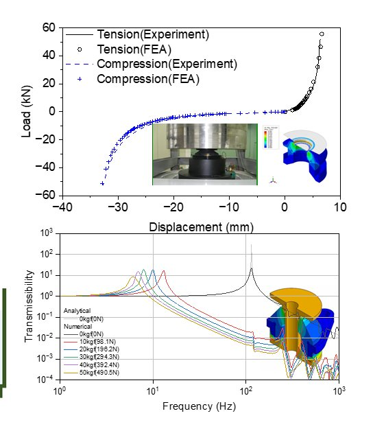
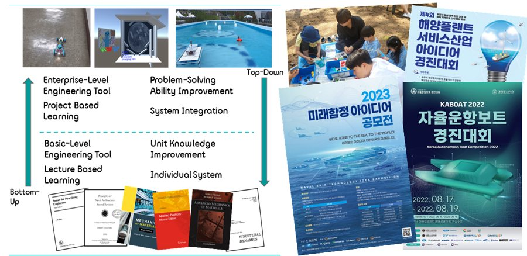
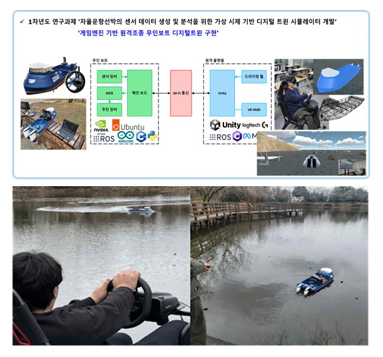
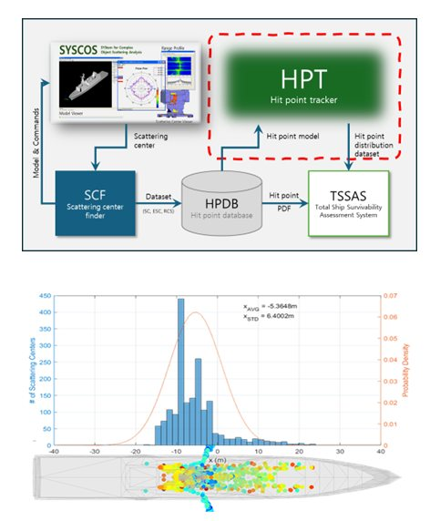
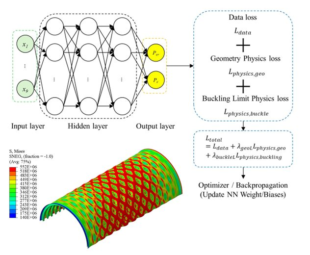

Assistant Professor, School of Electrical & Control Engineering & Department of Naval Architecture & Ocean Engineering, Tongmyong University

Prof. Park began his research on ductile fracture of marine structural steels — material testing, fracture modelling and collision simulation — and has since extended it to structure-borne underwater noise, target strength, radar cross section, physics-informed neural networks and game-engine-based digital twins. He has directed the Applied Cyber-Physical Systems Laboratory since joining Tongmyong University in 2020, combining industry-funded research with hands-on engineering education.








Faculty and student awards are listed on the News page.